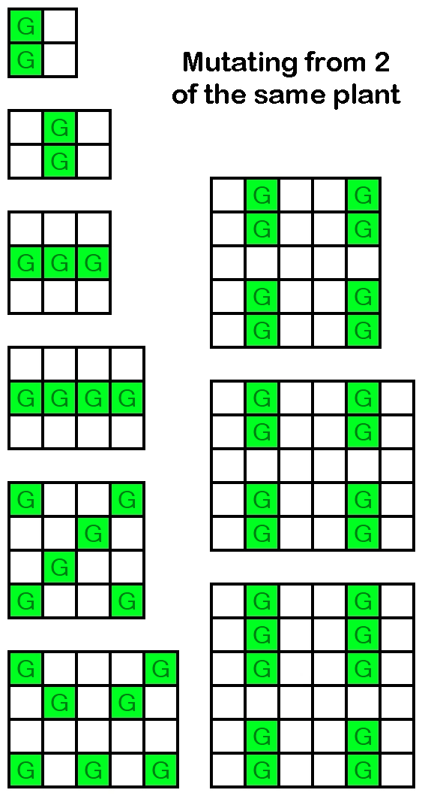
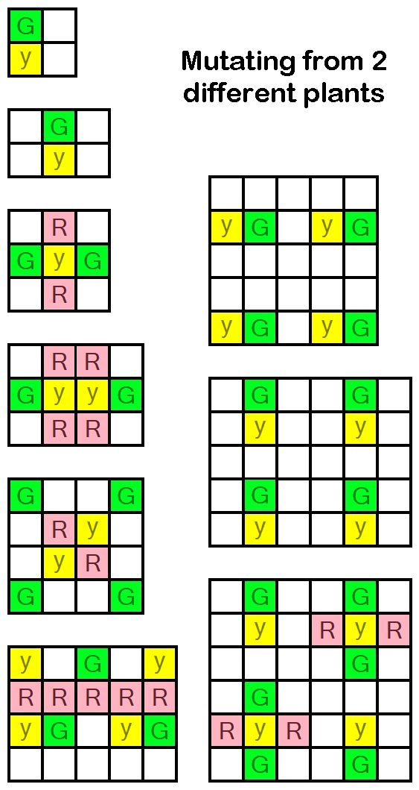

G = PLANT 1
Y = PLANT 2
R = UNWANTED GROWTHS


Mutation Guide
Ascensions Guide - how to get all 82 heavenly upgrades in 18 ascensions or less
(HC= Heavenly Chips)
Notes:
For each ascension, the first number is the target HC to get, which is a recommended minimum. The second number, "Total HC," is the total amount of HC required for all upgrades up to and including that ascension. The third number is the total cookies baked all time you'll need to complete this ascension.
If you don't know what any of the heavenly upgrades do, check out this link. https://pastebin.com/anF78Jmy.
It tells you what each and every one of the upgrades does, all sorted in the same order as you see below. (They are in order but not divided by ascension)
1st - 440 - Total HC: 440 - 85.184 quintillion
Legacy (1)
Heavenly Cookies (3)
How to Bake Your Dragon (9)
Box of Brand Biscuits (25)
Tin of British Tea Biscuits (25)
Tin of Butter Cookies (25)
Box of Macarons (25)
Starter Kit (50)
Heavenly Luck (77)
Permanent upgrade slot 1 (100) - see end of guide for what to do with permaslots
Heralds (100)
2nd - 3111 - Total HC: 3551 - 44.777 sextillion
Season Switcher (1111)
Permanent Upgrade Slot 2 (2000) - see end of guide for what to do with permaslots
3rd - 15361 - Total HC: 18912 - 6.7642 septillion
Milk selector (9) *cosmetic only
Background selector (99) *cosmetic only
Persistent Memory (500)
Lasting Fortune (777)
Lucky Digit (777) - be sure to end your total prestige in 7 upon ascending
Twin Gates, Angels, Archangels, Virtues, Belphegor, Mammon, Abaddon, Dominions (3200)
Golden Switch (999)
Kitten Angels (9000)
4th - 110732 - Total HC: 129644 - 2.179 octillion
Satan (2401)
Starter Kitchen (5000)
Decisive Fate (7777)
Golden Cookie Alert Sounds (9999)
Permanent Upgrade Slot 3 (30000) - see end of guide for what to do with permaslots
Halo Gloves (55555)
5th - 666666 - Total HC: 796310 - 504.948 octillion
Unholy Bait (44444)
Synergy Vol 1 (222222)
Permanent Upgrade Slot 4 (400000) - see end of guide for what to do with permaslots
6th - 2,155,831 - Total HC: 2,952,141 - 25.729 nonillion
Cherubim, Asmodeus (33614)
Lucky Number (77777) - be sure to end your total prestige in 777 upon ascending
Residual Luck (99999)
Divine Sales (99999)
Divine Discount (99999)
Divine Bakeries (399999)
Elder Spice (444444)
Inspired Checklist (900000)
7th - 9,013,074 - Total HC: 11,965,215 - 1.713 decillion
Seraphim, Beelzebub (235298)
Sacrilegious Corruption (444444)
All seasons upgrades [5x111111] (555555)
Five-Finger Discount (555555)
Synergy Vol 2 (2,222,222)
Permanent Upgrade Slot 5 (5,000,000) - see end of guide for what to do with permaslots
8th - 20,091,528 - Total HC: 32,056,743 - 32.943 decillion
Label Printer (999999) *cosmetic only
Fanciful Dairy Selection (1,000,000) *cosmetic only
God, Lucifer (1,647,086)
Genius Accounting (2,000,000) *no true effect on gameplay, but can be useful
Wrinkly Cookie (6,666,666)
Distilled Essence of Redoubled Luck (7,777,777)
9th - 77,777,777 - Total HC: 109,834,520 - 1.3251 undecillion
Lucky Payout (77,777,777)
10th - 240,353,606 - Total HC: 350,188,126 - 42.945 undecillion
Chimera (40,353,607)
Eye of the Wrinkler (99,999,999) *no true effect on gameplay, but can be useful
Stevia Caelestis (100M)
11th - 900M - Total HC: 1,250,188,126 - 1.954 duodecillion
Sugar Baking (200M)
Diabetica Daemonicus (300M)
Sugar Craving (400M)
12th - 2.6B - Total HC: 3,850,188,126 - 57.075 duodecillion
Sugar Aging Process (600M)
Sucralosia Inutilis (1B)
Sugar Crystal Cookie (1B)
13th - 17,111,111,095 - Total HC: 20,961,299,221 - 9.2099 tredecillion
Shimmering Veil (999,999,999)
Keepsakes (1,111,111,111)
Cosmic Beginner's Luck (14,999,999,985)
14th - 14,999,999,985 - Total HC: 35,961,299,206 - 46.506 tredecillion
Reinforced Membrane (14,999,999,985)
15th - 77,777,777,777 - Total HC: 113,739,076,983 - 1.4714 quattuordecillion
Fortune Cookies (77,777,777,777)
16th - 333B - Total HC: 446,739,076,983 - 89.159 quattuordecillion
Box of Pastries (333B)
17th - 333B - Total HC: 779,739,076,983 - 474.08 quattuordecillion
Not Cookies (333B)
18th - 333B - Total HC: 1,112,739,076,983 - 1.3778 quindecillion
Maybe Cookies (333B)
Past 1.113T total HC, it's a good idea to pause your progression and tackle some other achievements you might be needing, especially the 100 and 1000 ascend ones, as on average, they get more time-consuming the more prestige levels you have. Otherwise, aim to at least double your prestige level from here on out per ascend.
Permaslots
(440 - 21B HC [when you unlock Cosmic Beginner's Luck]) - slot these upgrades in as you unlock the slots
Permaslot 1 - highest illion fingers upgrade
Permaslot 2 - highest kitten
Permaslot 3 - highest Javascript Console upgrade
Permaslot 4 - 2nd highest kitten
Permaslot 5 - omelette
(21B - 114B [when you purchase Fortune Cookies])
Permaslot 1 - highest illion fingers upgrade (using CBL) OR second highest building biscuit OR a GC frequency upgrade
Permaslot 2 - highest building biscuit
Permaslot 3 - highest kitten
Permaslot 4 - highest Javascript Console upgrade
Permaslot 5 - 2nd highest kitten
(114B and beyond)
Permaslot 1 - highest illion fingers upgrade (CBL) OR second highest building biscuit OR a GC frequency upgrade
Permaslot 2 - highest kitten
Permaslot 3 - highest Javascript Console upgrade OR fortune console upgrade
Permaslot 4 - Fortune#103 [Kitten]
Permaslot 5 - highest building biscuit
Building biscuits are the upgrades you unlock for having at least 100 to 500 of every building, are rectangular, and are the "butter biscuits" that add 10% to cookie production multiplier.
Past 1.12T HC, your permaslots will really depend based on your needs, such as if you want to use CBL, don't want to wait to buy expensive upgrades, or want to get some useful holiday upgrades out of the way first, like omelette.